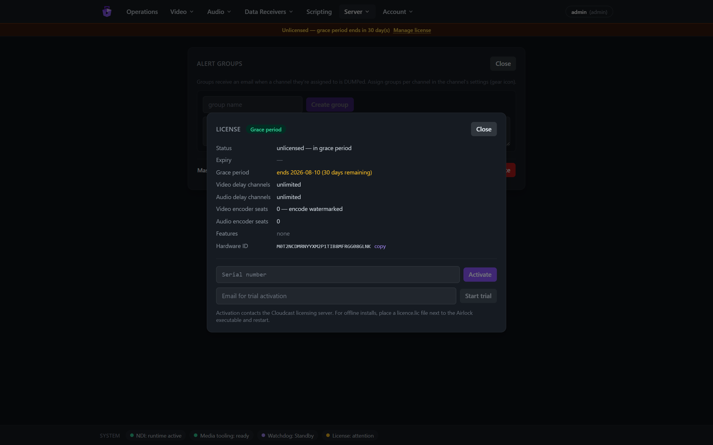

Airlock User Manual
Airlock is a broadcast delay server. It receives a live programme feed over NDI, buffers it for a configurable delay window, and re-transmits it — giving master control a window in which offending content can be dumped before it goes to air. Alongside the video delay it provides audio-only profanity delay channels (ASIO/ALSA hardware), SCTE ad-break triggering, an optional SRT/H.264 contribution encoder with audio processing, Axia Livewire GPIO panel integration, delayed data routing, alerting, primary/backup redundancy, and a runtime scripting engine — all managed from a web console.
This manual covers day-to-day operation and administration. For deployment
architecture and design rationale see docs/ in the source tree; for the
scripting API see docs/scripting-guide.md.
1. Core concepts
A channel is one delay path. Channels come in two kinds:
- Video channels receive an NDI source (
<source> → Airlock <name>) and re-send it, delayed, under the NDI nameAirlock <name>. - Audio channels are profanity delays on a sound-card pair (ASIO on Windows — e.g. the Axia IP-Audio driver — or ALSA on Linux), covered in §9.
A video channel is always in one of four states:
| State | Badge colour | Meaning |
|---|---|---|
| Live | green | Straight-through relay; no delay in the path. |
| Building | amber | The fill is playing to air while the delay buffer records the live feed. |
| Delayed | blue | Programme airs behind live by the buffer depth. The protection window is open. |
| RollingOut | orange | The delay is unwinding back to live. |
The transitions are driven by three transport commands:
- Build — start delaying. Airlock plays the channel's fill (or freezes the last live frame) while the buffer fills to the configured window.
- Roll out — return to live. The buffered content drains and the return to live ends in a deliberate forward jump cut — content received while the buffer drains is discarded (accepted design AIR-7).
- Dump — the protection action. The buffer is flushed so the offending content never airs; a reviewable dump clip is written and alert emails go out. Audio is faded at the flush so nothing clicks on air.
Two behaviours worth knowing before you operate:
- Source loss: if the input NDI feed disappears, the output does not stop —
Airlock self-paces and holds the last good frame (raising
ALARM_SOURCE_LOST) so downstream receivers never unlock, and resumes cleanly when the source returns. - Watermarking, not blocking: channels that don't hold a licence seat still run, but their output is watermarked (§14) — burnt-in video marks plus periodic audio tones. ROLLOUT and DUMP are never gated; they are always allowed as exits.
2. Getting started
Requirements
- The NDI runtime on the server (without it the server runs in ENGINE-SIM, a synthetic demo mode; the footer shows which).
- ffmpeg/ffprobe for fill conforming, previews and dump-clip transcoding
(
FFPROBE_PATH/FFMPEG_PATHif not on PATH; the footer and the Fills page warn when missing). - A disciplined host clock (NTP/PTP) — audit timestamps and outgoing timecode depend on it.
Installing
On Windows, the MSI installer sets Airlock up as a Windows service: the
installer asks for the web console port (default 8080; unattended installs
can pass WEBPORT=n to msiexec /qn), opens firewall rules for that port and
for TCP control (9350), and anchors the database and logs to
%ProgramData%\Airlock. Development/console runs (dotnet run) serve on
http://localhost:5000 by default and keep their data beside the executable
unless --DataDir says otherwise.
First sign-in
Open the console (http://<server>:<port>). On first boot, when no users
exist, Airlock creates the bootstrap account admin / airlock-change-me
(also logged loudly at startup and audited). Sign in and change it immediately
via Account → Change password.

Sign-in is rate-limited to 5 attempts per minute per IP. When LDAP or OIDC SSO is configured (§13.2), directory accounts sign in on this same form (LDAP) or via the SSO button; the internal login always remains available as break-glass.
The console at a glance
- Top navigation:
- Operations — the view-only dashboard over everything (§3);
- Video — Delay channels (the video console), Encoders, Fills, Dump clips;
- Audio — Delay channels, Fills & schedules, Censor schedules;
- Data Receivers — TCP Servers, TCP Clients, UDP Servers, Routing, Axia GPIO;
- Scripting (admin);
- Server (admin) — Settings & SMTP, Alert groups, License, Redundancy;
- Account — Change password, Sign out.
- Banners (under the header): an amber/red licence banner while the
licence needs attention (admins get a Manage license link); an amber/red
redundancy banner on a backup that has lost its master (or been taken
over); a sky-blue note on a synced backup — "Backup — configuration and
controls are managed by the master at
" (§13.6). - Footer status pills: NDI runtime, media tooling (ffmpeg), watchdog
state, licence state — plus a Redundancy pill (
Redundancy: primary/Redundancy: backup Synced…) when a redundancy role is configured.
Live numbers (meters, depth, states, encoder stats) stream over a single binary WebSocket at ~10 Hz, so what you see is effectively real time.
3. Operations dashboard and the Video console
Operations — the view-only dashboard
Operations is a read-only overview of the whole server — nothing on it changes state. It is banded into Input / output video (one tile per video channel: state badge, source line, input/output previews, meters, compact Depth/Drops/Holds counters, alarm strip), Encoder video (one tile per enabled encoder with its live preview and stats), Audio (one tile per audio channel with its depth bar and meters) and Audit (the latest 25 audit rows, refreshed every 3 s — every command from every interface lands here). Clicking any tile jumps to the owning control page and highlights the card.

Video → Delay channels — the video console
The control surface lives on Video → Delay channels: the full channel cards with transport buttons, plus the admin + Add channel control in the page header.

Reading a card, top to bottom:
Header — channel name; engine badge (
NDI delay engine, orengine-simwithout the NDI runtime); the licence-seat pill (licensed, or an amber UNLICENSED button — see §14); the state badge; the Encode pill (§8); the sliders icon that opens audio processing (§5); and the gear that opens channel settings.Source line —
<NDI source> → Airlock <name> · fill: <fill name>.Confidence monitors — Input and Output previews (~5 fps). The output preview shows what actually airs, including any watermark. In Delayed the output header reads "Output — delayed N.Ns".
Audio meters — L/R RMS bars with peak-hold, −60…0 dBFS, turning amber at −9 and red at −3.
Monitor input / Monitor output — click to listen in the browser (Opus over WebSocket; needs a WebCodecs browser — Chrome/Edge/Safari 16.4+). One audible tap per channel; a green MONITORING tag and a volume slider appear while live:

Counters —
Depth(frames and seconds),In/Outframe counts,Drops(red when non-zero),Holds(hold-last-frame repeats),SCTE(splices inserted).Alarm strip — active alarms in red, e.g.
ALARM_SOURCE_LOST(§17).Transport buttons — Build / Roll out / Dump / Trigger ad break (§4).
Adding, disabling and deleting channels (admin)
Click + Add channel in the Video delay channels header, type a name (max 24 characters) and pick the kind — video delay or audio delay. Enter submits, Esc cancels. Audio channels appear under Audio → Delay channels.

Disabling a channel (gear → Disable channel) stops it and releases its frame pool, engine and NDI receiver; the card collapses to a dimmed stub with Enable and Delete buttons (a dimmed tile also shows on Operations). Deletion is only possible while disabled and removes the channel's GPIO mappings, schedules and data routes with it.
4. Operating the delay
All transport commands live on Video → Delay channels (the Operations dashboard is view-only).
Build
Build is enabled only while Live. Press it and:
- the output switches to the channel's fill (or freezes the last live frame in freeze mode) while the buffer records the live feed;
- the state badge turns amber (Building) and the depth counter climbs;
- when the delay window is reached, the channel drops into Delayed and the programme airs behind live.

The delay window depends on the delay mode: with Delay to asset it is the fill's full length; with Delay to time it is a fixed window (§5).
Delayed — the protection window

In Delayed the operator can:
Dump — flush the buffer. A confirmation dialog ("DUMP
? The buffer flushes and the channel returns to live." ) guards the button. The flushed content is written as a dump clip and alert-group emails go out (§6).Roll out — unwind the delay back to live at the end of protected programming. The badge turns orange (RollingOut) while the depth drains, ending in the forward jump cut:

Trigger ad break — fire the
adbreakSCTE trigger template: one press emits SCTE-104 in the NDI output's VANC and (if the encoder runs) PTS-aligned SCTE-35 in the transport stream, with pre-roll.
Simulating source loss (engine-sim)
Without the NDI runtime, channels run against a synthetic source and admins
get Kill sim source / Restore sim source buttons to rehearse the
source-loss behaviour. With real NDI, killing the source upstream has the same
effect — hold-last-frame plus ALARM_SOURCE_LOST:

5. Channel configuration
Open the gear on a channel card (changes require the admin role; source, fill and delay-mode changes are only permitted while the channel is Live):

- Name — rename the channel (letters/digits/space/
- _ ., max 24). The NDI output name (Airlock <name>) follows at the next engine restart. - Source — a dropdown of NDI sources currently visible to the network finder, plus "Colour bars + tone (built-in)": an in-process test generator (SMPTE-style bars, bouncing Airlock mark, 1 kHz −18 dBFS tone) that switches on and binds in one click and persists across restarts. Handy for commissioning and the screenshots in this manual.
- Fill — one of the ready fill assets (§7) or "Freeze frame (no fill — delay to time)" to build against a freeze of the last live frame instead of playing fill.
- Delay mode:
- Delay to asset — the delay window equals the fill's full length (a 20 s fill gives a 20 s delay).
- Delay to time — a fixed window in seconds (0.25 s steps, capped at min(channel max depth, global cap — shown as "cap Ns")). A longer fill is cut short at the window; a shorter fill either loops (checkbox) or plays once and freezes its last frame, silent, until the window is reached.
- Changes Apply while Live and take effect at the next Build.
- DUMP email alerts — tick the alert groups to notify on DUMP (§6).
- Disable channel (release resources) — see §3.
A fill must fit the channel's maximum delay depth — the server refuses an over-length assignment rather than risk the buffer.
Channel audio processing (trim · EQ · compressor)
The sliders icon in the card header (tinted violet while active) opens the audio-processing modal — a stereo-linked processing chain on the channel's delayed PGM output. Changes apply live on air (there is no Save button); the encode branch keeps its own R128 loudness chain. Requires the operator role.

- Master On air / Bypassed toggle.
- Trim — ±24 dB fader with centre detent (double-click returns to 0).
- Parametric EQ — In/Out toggle; four bands LF · M1 · M2 · HF with a draggable response-curve editor (the curve is the actual engine response — RBJ biquads at 48 kHz) and per-band Freq / Gain / Q knobs.
- Compressor — In/Out toggle; Thresh / Ratio / Attack / Release / Makeup knobs and a live GR (gain-reduction) meter fed from telemetry.
6. DUMP alerts, clips and alert groups
Every DUMP:
- Flushes the buffer — the offending span never airs (audio is faded at the splice, so the exit is clean);
- Writes a dump clip of the flushed content for compliance review;
- Emails the channel's alert groups (when SMTP is configured) with the channel, who dumped and from which interface, the time, the flushed depth, and a login-protected deep link to play the clip in the console.
Video → Dump clips lists every clip (auto-refreshing): when, channel,
duration, who/via, and status — writing (violet) while the file is being
finalised, ready (green) once playable as MP4, raw (amber) for
audio-channel WAV dumps.

Play opens the clip player; alert-email links open the same player after login:

Alert groups (Server → Alert groups, admin) are named recipient lists (one email per line or comma-separated). Assign any number of groups to each channel in its settings. Groups are only emailed on DUMP — nothing else.

7. Fill assets
Video → Fills is the fill library (upload/delete are admin):

Upload any video file (an optional display name can be set); Airlock conforms
it for playout and generates a low-bitrate browser preview (needs ffmpeg — an
amber banner explains when uploads can be stored but not probed). The table
shows status (ready / uploaded / failed), format, duration, frames,
audio channels and size.

A fill assigned to a channel cannot be deleted (the delete is refused with a clear error) — unassign it first.
8. The encode option (SRT/SCTE-35)
The licensed ENCODE module encodes an H.264/AAC MPEG-TS over SRT, with SCTE-35 ad markers — a contribution feed that carries the same protection window as the NDI output.
Open a channel's Encode pill (admin) to configure and enable:

- Input source — "This channel's delayed output (PGM)" (the default) or "External NDI source": any NDI source encoded directly, bypassing the delay. Raster and framerate lock from the source's first frame (the encoder restarts once when they differ from the last known format).
- Video / transport — GStreamer encoder element with presets NVENC (hardware), OpenH264, x264 (software), or any custom element string; deinterlace; output resolution; SRT mode (listener or caller + host), port, latency, optional AES passphrase (write-only).
- Loudness (EBU R128) — audio encoder element (FDK-AAC / AAC (LGPL) / MP2 presets), target loudness (−23 LUFS EBU / −24 ATSC) with a true-peak ceiling; a loudness servo and limiter keep the feed compliant, and A/V alignment is automatic (an offset beyond ±5 ms raises an alarm).
- Audio processing — the same trim/EQ/compressor strip as the channel chain (§5), applied to this encoder's audio only, ahead of the loudness chain. In circuit / Bypassed toggle; applied live without restarting the encoder; its GR meter reads the encoder's own stage.
- SCTE-35 — enabled flag, PID, null-packet interval.
Saving the config sections restarts a running encoder. The status grid shows the child process pid, restarts, ring drops, integrated loudness, gain reduction, A/V offset, SCTE-35 count and consumer heartbeat.
The encoder runs as a supervised child process per channel — an encoder
crash never affects the NDI programme output; the supervisor restarts it and
raises/clears ALARM_ENCODE_DOWN.
Video → Encoders shows one card per enabled encoder with a live output preview (the watermark is visible on unlicensed feeds), loudness/A-V/drops/ SCTE stats, its licence seat state, and Assign/Release seat buttons (admin). The Operations dashboard mirrors these as read-only tiles.

9. Audio profanity delay
Audio channels are broadcast profanity delays on a sound-device pair, modelled on long-serving industry practice: the delay builds by playing programme slightly slow (or by inserting fill) and exits slightly fast (or jump-cuts), with equal-power crossfades so nothing clicks. They live on Audio → Delay channels:

States: Idle (grey) → Building (amber) → InDelay (green) →
Exiting (sky) → Idle. The card shows a depth progress bar
(current / configured ms), the child process pid and restart count, backend
summary, IN/OUT level meters, and the command row:

| Command | Effect |
|---|---|
| Build | Start building the delay (Idle only). |
| Dump | Discard the configured dump segment from the buffer — the write pointer rewinds; if less than 20% of the delay would remain, it escalates to a full dump. Dumped audio is captured to WAV in Dump clips. |
| Dump all | Flush the whole buffer to true-zero depth (with a softening fade). |
| Exit | Leave delay per the exit mode — compress (drain fast) or rollout. |
| Cough | Momentary kill/re-arm. |
| Censor | Overwrite the about-to-air span with tone/silence/file — depth is unchanged (nothing is removed, unlike Dump); repeated presses extend the region; a configurable pre/post bracket widens it. |
Configure opens a four-tab modal:

Device — backend
asio(Windows; e.g. the Axia IP-Audio driver),alsa(Linux) orsim(no hardware — demo/test); device name; optional post-censor offset (an extra-delayed clean output on the pair above the main pair).Delay & build — delay size (ms), build/exit rates (%), exit mode (
compress/rollout), build mode (expand= stretch live,insert= play fill), fill strategy (squeeze= time-stretch the asset to exactly the build window, orsilent), default fill asset.
Dump — dump size (ms, 0 = all), dump strategy (
dump= discard, orcensor= replace with a file), build after dump (disabled= hold the reduced depth, or rebuild automatically after dump / dump-all / both), censor file.
Censor — strategy (
tone/silence/file), bleep frequency, censor file, censor size, pre/post bracket (ms).
Fills and dayparted schedules
The audio fill library (MP3/WAV uploads, conformed to 48 kHz stereo) and the
dayparted fill schedules live on Audio → Fills & schedules — with
build mode insert + fill strategy squeeze, matching schedule rows
(fill × days × time window) are round-robined at build time. The matching
censor schedules (which censor file plays, by time of day) are on
Audio → Censor schedules and apply with dump strategy censor. Audio
cards link across with Fill schedule → / Censor schedule → when their
configuration makes those pages relevant.


Post-delay cough/censor
Installations using the extra-delayed post-censor output (Device tab →
post-censor offset) get a second protection point after the main delay:
held cough and censor on that output. These have no web buttons — they are
driven from hardware GPI (coughpost / censorpost mapping commands,
held-only: active while the pin is held) or REST (coughposton/off,
censorposton/off), with postCoughActive / postCensorActive GPO lamps
(§10).
Audio channels take the same seat/watermark model as video: an unseated audio
channel plays a ~1 s tone burst every 30 s on its output
(§14). Like the encoder, each audio channel runs as a
supervised child process — a driver crash can't take the server down
(ALARM_AUDIO_DOWN while it restarts). Audio commands are also available
over TCP, GPIO and scripting, and audio DUMPs land in Dump clips as WAV.
10. Axia Livewire GPIO
Data Receivers → Axia GPIO integrates Livewire GPIO nodes (xNodes etc.) so hardware panels drive the delay and lamps follow its state. Four tabs:
Devices (admin) — add nodes by name/IP/port (default 93; password optional — passwordless nodes are fully supported). The table shows connection state, discovered capabilities (GPI/GPO counts, sources/ destinations) and whether GPI simulate-writes are supported.

Live GPIO — pick a device to see the live pin grid (5 pins per port, green = high; the display is the node's confirmed state). Operators can simulate a GPI press on writable devices, and manually toggle GPOs — toggling a pin owned by a status mapping prompts for an audited override (the mapping is suspended, the pin gets an amber ring and a ⟳ release action). A warning banner appears while the device is not connected (pin state may be stale):

Mappings (admin) — the wiring between pins and channels:

- GPI → channel control (stackable): device/port/pin → channel + command.
Video commands
build | rollout | dump | trigger(adbreak); audio commandsdumpall | exit | exitcompress | exitrollout | cough | censor | forcecensoroff | coughpost | censorpost; and delayed relayspulse1..10/static1..10— a contact closure that re-emerges on a matching GPO source delayed by the channel's current depth, in sync with the delayed programme (DUMP cancels relays in the discarded span). Trigger edge: falling (default — momentary active-low is the broadcast norm, and means reconnects can never replay commands), rising, level high/low, or held (on/off) — the command is active while the pin is held and releases with it (offered for cough/censor and required for coughpost/censorpost). Adding a device offers a default template: port n pins 1–4 = channel n Build / Rollout / Dump / Trigger. - GPO ← channel status (one enabled mapping owns each pin):
- level sources —
inDelay(the canonical "we are delaying" lamp — Building ∪ Delayed ∪ RollingOut),stateBuilding/stateDelayed/stateRollingOut/stateLive,serverAlarm,delaySafe(depth ≥ one dump window),delayFull/delayEmpty,depth10…depth100(depth deciles — e.g. drive a 10-LED depth ladder),coughActive/censorActive/postCoughActive/postCensorActive, andstatic1..10; - event (pulse) sources —
dumped(one pulse per DUMP, video and audio),dumpedAll,built,wentLive, andpulse1..10. - Mode
heldorpulse(default 100 ms).
- level sources —
GPI commands land on the same audited command queue as the web console and TCP (50 ms per-channel debounce; DUMP is exempt from debounce).
Snake routing (admin) — continuously re-asserted GPI→GPO follows across devices (source node pins → destination node pins with an offset). Heed the warning: snake mode overrides any other routing controller (e.g. PathFinder) on those pins.

11. Data receivers and delayed data
Data Receivers ingests line- or chunk-framed data streams (now-playing metadata, tickers, scoreboards…) and can delay them through a channel so the data re-emerges in sync with the delayed programme.
Receiver kinds: TCP Server (listens), TCP Client (dials out, with optional on-connect and keep-alive messages), UDP Server. Each has raw or line framing, optional per-receiver file logging (directory and retention set in Server settings), state pill, traffic counters and connected-client list:

The Live data log at the bottom streams traffic in real time — received
messages (⇢), delayed releases (⇠ released, green) and connection events
— filterable per receiver, with Pause and Clear.
The Routing tab binds a receiver to a delay channel (video or audio;
or "passthrough" for no delay) plus an optional fixed offset, and fans out to
sends: TCP send, UDP send, or back out via an existing TCP receiver's
connections. Queue counters show queued · sent, plus dumped — a DUMP on
the channel cancels the queued messages from the dumped span so suppressed
content's metadata never leaks:

Incoming data can also fire scripts (dataReceived, dataClientEvent,
dataDelayed triggers — §12).
12. Scripting
The Scripting view (admin only) hosts runtime automation scripts in
Lua, JavaScript or C#. Scripts run on the control plane only —
never the frame path — and everything they do passes the same command gate
and audit trail as the UI (source = script).

Each script card shows its language, enabled state, trigger summary and version; the cog menu offers Edit / Run now / Enable / Delete. The Live log streams script output and errors, colour-coded.
The editor (Monaco, with Ctrl-Space autocomplete for the air host API)
binds a script to a trigger: manual, startup/shutdown,
channelEvent (EnteredBuilding/EnteredDelayed/EnteredRollingOut/
ReturnedToLive/Dumped, optionally scoped to a channel), audioEvent,
encoderEvent, gpi, timer, schedule (cron), or the data triggers.
Validate checks the script; Save version creates an immutable
version, and the history chips (v1, v2, …) activate/roll back:

The host API covers channel transport and status, audio-delay commands, encoder control, SCTE triggers, GPIO, persistent variables, logging and alerts. There is deliberately no sleep — use timer/schedule triggers; each invocation has a 1 s timeout. Lua and JavaScript are sandboxed; C# runs full-trust — treat it like server-side code. Full reference and examples: docs/scripting-guide.md.
Note the host-call syntax in Lua is colon-style:
air:Log(...),air:Build(1)— while JavaScript and C# use dot-style (air.Log(...)).
13. Server administration
13.1 Settings & SMTP (Server → Settings & SMTP)

- Max delay cap — global ceiling in seconds (1–300; default 30). A channel's effective window is min(its own max, this cap).
- Public base URL — the host used in alert-email clip links (empty = links omitted); also the base for the OIDC redirect URI.
- Data logs — directory and retention (days) for data-receiver file logs.
- Alert email (SMTP) — server, port, security (STARTTLS 587 / SSL 465 / none), optional auth (password write-only), From address/name, and a Send test email button. Used for DUMP alerts only.
13.2 External authentication — LDAP / OIDC
Same modal, lower sections; internal sign-in always remains as break-glass.
- LDAP / Active Directory — server/port + security (LDAPS/StartTLS/none),
service bind DN + password, base DN, user filter (default
(sAMAccountName={0})), role mappings (role: group-DN, one per line, first match wins), default role or "refuse unmapped users". - OIDC SSO (Entra ID / Okta / Keycloak…) — authority, client id/secret,
scopes, role claim (default
groups), role mappings, default role, button label. Register the redirect URI<public base URL>/api/auth/oidc/callbackwith the IdP.
13.3 Users
User management is API-only in this release (no UI screen):
GET/POST/DELETE /api/users (admin) manages internal accounts; everyone can
change their own password via Account → Change password.

13.4 Audit and backup
The audit log is append-only and viewable at the bottom of Operations (full
history via GET /api/audit?from&to&ch&skip&take). A checkpointed copy of
the configuration database can be downloaded by admins from
GET /api/server/backup (API-only).

13.5 Watchdog
A separate watchdog process monitors the server's heartbeat and can take over
the NDI output names in a failover pair on the same host. Its state shows
in the footer. Fail-back is operator-confirmed by default
(POST /api/server/failback, operator role) so a recovered primary never
glitches live programming unannounced. For a second, geographically separate
server, see Redundancy below — the two mechanisms are independent.
13.6 Redundancy (primary/backup)
Server → Redundancy configures a warm-standby pair: a primary (master)
serves configuration, users and media to one or more backups over a
/ws/sync link secured by a shared sync key (generated once on the
primary — "shown once — paste into each backup"). Fill and audio-fill
assets mirror automatically.

- Roles are gated by licence feature flags: only a licence carrying PRIMARY can serve backups, only one carrying BACKUP can join as a backup (the radios are greyed otherwise — the screenshot above shows a standalone instance). Role and sync settings are admin; takeover/rejoin are operator actions.
- A synced backup is locked: the whole console is read-only (buttons
greyed, REST mutations refused, TCP verbs answer
ERR … LOCKED), and its alert emails, GPO drives and data-route sends are suppressed so nothing fires twice. Its NDI outputs run under a configurable name suffix. - Master lost: the backup unlocks local control for a sealed 14-day window (staged warning emails; banner countdown). Local changes are discarded when the master returns. At expiry controls re-lock — except DUMP and ROLLOUT, which always remain available.
- Take over — adopt primary NDI names (operator-confirmed, only while the master is unreachable): the backup renames its outputs to the primary's NDI names so downstream receivers cut over. Rejoin as backup reverts the names, re-locks and resyncs (the master's configuration wins).
- The backup's state is always visible: the footer Redundancy pill, the banners, and the panel's live status (with the primary's Connected backups table on the master).
14. Licensing
Server → License shows the licence panel:

- Four independently licensed capabilities: video delay channels, audio delay channels, video encoder seats, audio encoder seats, plus feature flags (shown in the Features row — including PRIMARY / BACKUP, which gate the redundancy roles, §13.6).
- Activation — enter a serial and Activate (contacts the Cloudcast
licensing server; the daily online re-check tolerates 30 days of failures),
Start trial with an email when no serial is present, or for offline
installs place a
licence.licfile next to the Airlock executable and restart. The Hardware ID shown (with copy button) is what a licence request is generated against. - No grace period — a server with no licence is unlicensed immediately ("Unlicensed — channel outputs carry burnt-in watermarks and audio tones" banner); every channel and encoder runs watermarked until a licence is activated. An activated system that can't reach the licence server tolerates 30 days of failed daily checks before it too goes unlicensed. (The backup's 14-day local-control window is a separate mechanism again.)
Seats and watermarking. Licensed channel counts are seats that admins assign per channel (the pill next to the channel name; click to assign or release). Anything unseated still runs but is watermarked:
- video: the Airlock mark + "AIRLOCK — UNLICENSED" burnt into the output (and its preview — what you see is what airs) plus periodic tone bursts;
- audio channels: a ~1 s tone burst every 30 s;
- encoders: "AIRLOCK — ENCODE UNLICENSED" burnt into the TS feed.

Watermarks react live to seat and licence changes. With no valid licence at all, every channel and encoder is unseated and runs watermarked — nothing is blocked, and ROLLOUT and DUMP always work, so a delay in progress can always be exited safely.
Runtime limits. Functionality with no output to watermark is time-boxed instead: on an unlicensed server each data receiver (§11) and script (§12) is disabled 30 minutes after it was enabled (audited, with an alert email). Re-enabling it grants another 30 minutes; activating a licence lifts the limit.
15. Remote control: TCP protocol and REST
TCP control (automation LAN)
A plain line-oriented TCP protocol listens on port 9350 (UTF-8, CRLF,
OK/ERR replies). It is unauthenticated by design — restrict it to the
management/automation LAN (there is an allow-list; default localhost only).
BUILD <ch> ROLLOUT <ch> DUMP <ch> TRIGGER <ch> <template> [k=v …]
DUMPALL <ch> EXIT <ch> COUGH <ch> CENSOR <ch> (audio)
STATE <ch> SUBSCRIBE <ch> PING
SUBSCRIBE streams TALLY <ch> <State> on every state change plus
ALARM <ch> <code> lines. Commands pass the same state-legality gate and
audit trail as the UI (source = tcp), so e.g. BUILD on a Delayed channel
returns ERR … ERR_INVALID_STATE. On a synced backup, mutating verbs answer
ERR <ch> LOCKED … (after the 14-day window expires, DUMP/DUMPALL/EXIT/
ROLLOUT still work — everything else is refused).
REST
Everything in the console is REST + JWT underneath (POST /api/auth/login →
bearer token). Highlights: GET /api/channels,
POST /api/channels/{n}/build|rollout|dump|trigger (dump requires body
{"confirm": true}), audio actions
POST /api/channels/{n}/audio/{action} (build, dump, dumpall, exit,
exitcompress, exitrollout, cough on/off, censor on/off, forcecensoroff, and
the post-delay coughposton/off / censorposton/off), audio processing
PUT /api/channels/{n}/audio-processing and /encode-audio-processing,
redundancy GET/PUT /api/redundancy + takeover/rejoin, GET /api/audit,
GET /api/metrics, GET /api/server/status. WebSockets (token via
?access_token=) carry telemetry, previews, audio monitoring and the log
streams.
16. Roles and permissions
Roles are hierarchical: admin ⊇ operator ⊇ viewer. On a synced backup every operational capability is refused server-side regardless of role (§13.6).
| Capability | viewer | operator | admin |
|---|---|---|---|
| View dashboard, previews, meters, audit, clips, fills, receivers, GPIO state, licence status | ✔ | ✔ | ✔ |
| Play dump clips / fill previews; change own password | ✔ | ✔ | ✔ |
| Build / Roll out / Dump / Trigger (video) | ✔ | ✔ | |
| Audio delay commands and audio config/schedules | ✔ | ✔ | |
| Channel & encoder audio processing (trim/EQ/compressor) | ✔ | ✔ | |
| Enable built-in test pattern; GPI simulate; GPO toggle/override | ✔ | ✔ | |
| Watchdog fail-back (API); redundancy take-over / rejoin | ✔ | ✔ | |
| Channel create/delete/rename, source/fill/delay-mode, enable/disable | ✔ | ||
| Encode config/enable; licence seat assignment | ✔ | ||
| Fill upload/delete; clip delete; alert groups | ✔ | ||
| Server settings, SMTP, LDAP/OIDC, licence activate/deactivate, backup | ✔ | ||
| Redundancy role & sync-key configuration | ✔ | ||
| LWRP devices/mappings/routing; data receivers/routes | ✔ | ||
| Scripting (the view is hidden below admin) | ✔ | ||
| User management (API) | ✔ |
17. Alarms and troubleshooting
| Alarm | Meaning | Notes |
|---|---|---|
ALARM_SOURCE_LOST |
Input NDI source gone (>500 ms) | Output holds the last good frame and self-paces; Holds counter ticks. Clears on source return. |
ALARM_NDI_CREATE_FAILED |
The channel's NDI sender could not be created | Usually a sender-name collision — another sender on the network already uses Airlock <name> (e.g. a second Airlock instance that hasn't restarted its engine after a rename). Free the name, then disable/enable the channel. |
ALARM_ENCODE_DOWN |
Encoder child not running | Supervisor restarts it; programme output unaffected. Check the encoder element (e.g. NVENC on a box without an NVIDIA GPU) in the Encode modal. |
ALARM_AV_OFFSET |
Encoder A/V offset beyond ±5 ms | Realignment is automatic; persistent offset warrants investigation. |
ALARM_AUDIO_DOWN |
Audio-delay child not running | Supervisor restarts it; check backend/device name in the audio channel's Configure → Device tab. |
| Ring-full / oversized-metadata alarms | Buffer or metadata limits hit | Buffered content is never overwritten; oversized NDI metadata (>4 KB default) is dropped, not truncated. |
Quick checks, in order: the footer pills (NDI runtime present? media tooling ready? watchdog? licence? redundancy?), the banners (licence, redundancy/lockout), the alarm strip on the affected channel card, then the Audit table — every command and state change from every interface is there, including refusals and their reasons.
Manual generated against Airlock as of 2026-07-11 (main @ 77d21e2, AIR-1…113). Screenshots were captured on a live instance using the built-in colour-bars + tone test source.